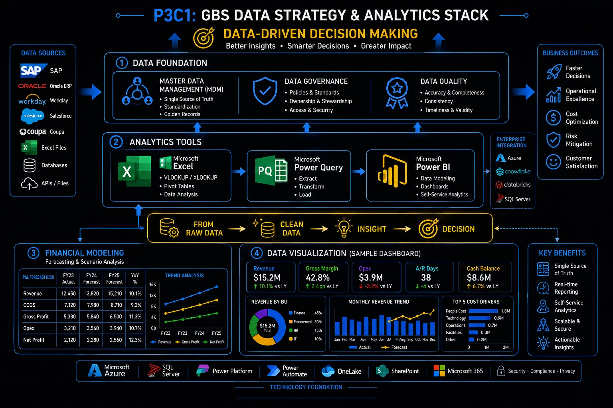

Data Strategy and Analytics Data without interpretation is noise. Interpretation without data is opinion.
Every GBS professional works with data daily. The ones who advance are those who go beyond processing it — they understand what it means, communicate what it shows, and know when it is lying to them.
Sound familiar?
 RYou live in a spreadsheet you know will break someday.T1 →
RYou live in a spreadsheet you know will break someday.T1 →
 KYour VLOOKUP broke again when a column moved.T2 →
KYour VLOOKUP broke again when a column moved.T2 →
 ASimple volume questions take you an hour.T3 →
ASimple volume questions take you an hour.T3 →
 PYou cannot reproduce your own analysis from March.T4 →
PYou cannot reproduce your own analysis from March.T4 →
 PThe same vendor exists four times in the system.T5 →
RYour numbers get reported. Never explained.T7 →
PThe same vendor exists four times in the system.T5 →
RYour numbers get reported. Never explained.T7 →
Excel in GBS — essential tool, not a permanent solution
Excel is essential and temporary at once. The skill is knowing which jobs it fits — and which it will fail. The model is in THE FIX.
Excel runs your day.
It should not run your process.
RRavi’s team tracker is a workbook. Seventeen tabs. Four owners.
It broke twice this month. Both times, nobody noticed for days.
"The process works — as long as nobody touches cell C7."
He feels uneasy every month-end.
The spreadsheet that made you fast is now something the whole team depends on — but nobody manages it, nobody documents it, and nobody checks if the formulas are still correct.
Excel has a right zone — and a failure zone. One test separates them.
Ravi flags the tracker as a process, not a file. The conversation about a proper tool finally starts.
Excel in GBS — full guidance on fit and limits
Excel is the Swiss army knife of GBS. Versatile, fast, and universally available. But knowing when to use it — and when to replace it — separates analysts who contribute from analysts who become bottlenecks.
- One-off data analysis: ad hoc investigations, answering a specific question from a dataset, verifying an anomaly in a KPI — Excel is faster than building a dashboard for a question you will ask once
- KPI mock-ups and prototyping: before investing in a Power BI dashboard, build the logic and layout in Excel first. Validate the concept, then migrate to a sustainable platform
- When no system capability exists: in the absence of proper reporting infrastructure, Excel is a legitimate compromise — not ideal, but functional. Acknowledge the gap and plan to close it
- Financial modeling and scenario analysis: Excel's flexibility for building models with assumptions, sensitivity tables, and what-if analysis is still unmatched for many finance use cases
- Regular operational KPI reporting: a weekly or monthly report that depends on one person's Excel skills, with manual data refresh, formula dependencies, and no version control — this should be in Power BI, Tableau, or an automated reporting tool
- Multi-user data entry or tracking: shared Excel files used as pseudo-databases create version conflicts, data corruption, and audit trail gaps. Replace with a proper workflow or ticketing system
- When the file grows past 20MB or contains 100K+ rows: Excel was not designed to be a database. Performance degrades, formulas break silently, and one accidental sort can destroy data integrity
- When continuity depends on one person: if only one analyst understands the file, the organization has a single point of failure. That is not a skill — it is a risk
Data foundation — from raw data to insight
Find one workbook doing a system’s job. Name it in your next team meeting.
Staying in Excel for now? At least stop using the function that lies.

GBS data strategy & analytics stack: from raw data to data-driven decision making
VLOOKUP vs XLOOKUP — why the upgrade matters
XLOOKUP fixes every VLOOKUP limitation: no column counting, no breakage on inserts, built-in error handling. The model is in THE FIX.
Your lookup broke again.
The 30-year-old function is why.
KMonth-end. A colleague inserts one column into the source sheet.
Klaudia’s VLOOKUPs shift silently — wrong values, no error.
The report goes out. The correction email follows.
"The formula did not fail. It lied."
She feels burned.
VLOOKUP fails silently — and silent failures reach stakeholders.
XLOOKUP exists because every one of those failures has a fix.
One afternoon of converting formulas. The silent-lie failure mode is gone from her reports.
VLOOKUP vs XLOOKUP in depth — full syntax comparison
VLOOKUP has been the default lookup function for 30 years. XLOOKUP, available since 2019, fixes every limitation VLOOKUP had. If you are still using VLOOKUP, this section shows you why — and how — to switch.
What it does
- Searches the first column of a range and returns a value from a specified column
- Cannot look left — the lookup column must be leftmost
- Uses a column number (not column name) — fragile if columns are inserted or deleted
- Returns #N/A on no match unless wrapped in IFERROR
- Defaults to approximate match — a common source of silent errors
What it does better
- Searches any column and returns from any other column — direction does not matter
- Built-in error handling — specify a default value for no match directly in the formula
- Defaults to exact match — no more silent approximate match errors
- Can search bottom-to-top — useful for finding the last entry in a list
- Cleaner syntax — no column index number, no IFERROR wrapper needed
Convert one active VLOOKUP report to XLOOKUP. Add if_not_found to every lookup.
Lookups fixed. Now answer volume questions in minutes.
Pivot tables — the single most valuable Excel skill in GBS
Pivot tables turn raw transactions into answers in minutes — the highest-value Excel skill in GBS. The model is in THE FIX.
"How many per vendor per month?"
That should take two minutes.
AA stakeholder asks Amara for aging by entity.
Her colleague starts filtering and copying. Forty minutes.
Amara drops the raw data into a pivot. Three fields. Done before the coffee cools.
"What took you so long last time?"
She feels proud — and a little guilty for the colleague.
You answer data questions by hand while a pivot answers them by design.
Every pivot is three decisions.
Volume questions stop being work and become lookups.
Pivot tables in depth — from raw data to analysis
Pivot tables turn raw transaction data into structured analysis in minutes. They are the fastest way to answer questions like "how many invoices per vendor per month?" or "what is the aging breakdown by entity?" without writing a single formula.
Select your data
Your data must be in a flat table — one row per record, headers in the first row, no merged cells, no blank rows. If your data is not in this format, clean it first. Pivot tables require structured input.
Insert pivot table
Insert → Pivot Table → select your data range → choose where to place it. A blank pivot table field list appears on the right.
Drag fields to build your view
Drag dimensions (vendor, entity, month) into Rows or Columns. Drag measures (amount, count) into Values. Drag filters into Filters. The pivot table updates instantly. Rearranging is as simple as dragging fields between areas.
Summarize and interpret
Right-click any value to change the summary (sum, count, average). Use "Show Values As" for percentages, running totals, or rank. Add a pivot chart for visual output. The pivot table is not the deliverable — the insight it reveals is the deliverable.
- Invoice aging by vendor: Rows = vendor name. Columns = aging bucket (0–30, 31–60, 60+). Values = count of invoices. Instantly shows which vendors are aging and where volume concentrates.
- Volume trend by month and entity: Rows = month. Columns = entity/company code. Values = count of transactions. Shows volume trends over time — the foundation for capacity planning.
- Error analysis by type and processor: Rows = error category. Columns = processor name. Values = count. Reveals whether errors concentrate in one category or one person — different root causes, different fixes.
- Open items at month-end: Filter = period. Rows = process. Values = count + sum of open amounts. The hardest metric to hide — and the most useful for backlog conversations.
Analytics tools beyond Excel
Take your most-asked volume question. Build the pivot that answers it permanently.
Fast answers need trustworthy sources. Can you prove yours?
The analyst's audit trail — documenting your work properly
Analysis someone can verify and reproduce months later is the real skill. The audit trail makes it possible. The model is in THE FIX.
Your March analysis is correct.
Can you prove it in September?
PAn auditor asks Priya where a March number came from.
Six months, three file versions, one changed extract later —
her documentation answers in five minutes: source, date, filters, steps.
"Most people cannot show us this."
She feels solid.
You trust your memory to reconstruct what your documentation should have kept.
An audit trail is three notes, written at work time.
Trust in her numbers becomes trust in her.
The analyst’s audit trail in depth
Creating a graph is not the skill. Creating a graph that someone else can trust, verify, and reproduce six months later — that is the skill. The difference is an audit trail.
Source
Document where the data came from. System, report name, date extracted, who pulled it.
Inputs
Raw data tab — untouched. Any assumptions, filters, or exclusions documented on a separate sheet.
Workings
Transformation logic, formulas, pivot tables. Each step traceable. Named ranges for clarity.
Output
The deliverable: charts, tables, summary. With interpretation — not just the visual, but what it means.
In GBS, the audit trail is what turns analysis into evidence. GBS analysts produce output that feeds SLA reports, management decisions, and audit evidence.
- A chart without a documented source is not evidence. It is a claim.
- A report with no traceable methodology cannot be defended during an audit review.
- Building the audit trail while you work takes 5 minutes. Reconstructing it six months later takes days, if it is possible at all.
This habit separates analysts who are trusted with high-stakes analysis from those who are not.
Visualization — dashboards that drive decisions
Add a source note to your current analysis: system, date, filters. Three lines, permanent habit.
Clean analysis needs clean inputs. Meet the layer nobody explains.
Master Data ManagementMDM — the governance of the critical reference data (vendors, customers, materials, GL accounts) that all transactions depend on. Clean master data = reliable processes. Dirty master data = errors, rework, audit findings. — what nobody explains to new joiners
Master data — vendors, customers, GL accounts — is the reference layer every transaction depends on. Dirty masters mean dirty everything. The model is in THE FIX.
The report was wrong.
The transaction was right.
PThe spend report shows a top vendor twice — under two names.
Peter traces it: the vendor exists four times in the master. Different spellings, same company.
Every transaction was correct. Every report built on them was wrong.
"We did not have a reporting problem. We had a master data problem."
He feels sobered.
You fix reports downstream while the error lives in the reference data upstream.
Master data is the reference layer — everything transactional inherits its quality.
The dedup request fixes twelve reports at once. Upstream beats downstream.
Master Data Management in depth
Master data is the foundation data that every transaction references — vendor records, customer records, material numbers, GL accounts. When it is clean, processes run smoothly. When it is not, errors cascade through every downstream step. Garbage in, garbage out.
- Vendor name, address, VAT/tax ID
- Bank account details for payments
- Payment terms (net 30, net 60)
- Purchasing organization assignment
- Duplicate vendor risk — #1 P2P fraud vector
- SOX control: changes require approval
- Customer name, billing address, ship-to
- Credit limit and payment terms
- Revenue recognition rules by customer
- Dunning procedure assignment
- Duplicate records cause collection confusion
- SOX control: credit limit changes require approval
- Material numbers, descriptions, categories
- GL account chart — the backbone of financial reporting
- Cost center and profit center assignments
- Incorrect GL mapping = misclassified financials
- Inconsistent naming = duplicate materials, wrong pricing
- SOX control: GL structure changes require controller sign-off
- Duplicate vendors: the same supplier exists under two names with two bank accounts. One is legitimate, one is fraudulent. Without MDM controls, both receive payments.
- Incorrect payment terms: a vendor record shows net 30 but the contract says net 60. The system pays early. Cash leaves 30 days sooner than it should — across thousands of invoices, that is a working capital impact.
- GL misclassification: expenses coded to the wrong GL account distort financial statements. This creates audit findings, restatement risk, and erodes management's trust in the numbers GBS produces.
- Orphaned records: vendors, customers, or materials that are no longer active but still in the system. They consume maintenance effort, create confusion, and occasionally receive payments or credits in error.
- MDM is invisible until it breaks. No GBS professional starts their career thinking about master data governance. But the analysts who understand why vendor bank details require four-eyes approval, why GL account creation follows a defined process, and why duplicate detection is a SOX control — those analysts understand the infrastructure their work depends on.
- A large percentage of SOX controls in GBS are master data controls. If you work in F&A shared services, your daily work is shaped by MDM governance whether you know it or not. Changes to vendor bank details, credit limits, payment terms, and GL assignments are all controlled activities — and your role in executing or checking those changes is part of the control environment.
- "Garbage in, garbage out" is not a cliche — it is a root cause statement. When a KPI looks wrong, before questioning the formula, question the data. Before questioning the data, question the master data it was built on. The root cause of many persistent GBS problems is upstream data quality, not downstream processing errors.
Pick one recurring report error. Trace it upstream: transaction or master data?
Clean data deserves a good surface. Most dashboards waste it.
Power BI and dashboards — what makes them useful versus decorative
Useful dashboards answer a recurring decision. Decorative ones get admired once. The difference is the process behind them. The model is in THE FIX.
Another dashboard shipped.
Opened once. Admired. Abandoned.
 K
KKlaudia builds a dashboard for team leads. Weeks of work. Praise at the demo.
Usage stats after a month: four views. Two are hers.
"What decision was this supposed to feed?"
Nobody had asked that at the start. She feels deflated.
You build the dashboard first and hope someone uses it for a decision. Start from the decision: what does the reader need to decide, and what data would answer that question?
Useful dashboards start from the decision, not the data.
Version two starts from one weekly decision. It opens every Monday — because a meeting depends on it.
Dashboards in depth — useful versus decorative
GBS centers are full of dashboards. Most of them are opened once, admired, and never used for a decision. The difference between a useful dashboard and a decorative one is not design — it is whether there is a process, an owner, and an action behind it.
It answers a specific question
A good dashboard does not show everything. It answers: "Is this process on track or not?" "Where is the backlog?" "Which entity is at risk?" If it does not answer a question, it is decoration.
It has an owner
Someone is accountable for reviewing the dashboard on a defined cadence. If nobody owns it, nobody acts on it. A dashboard without an owner is a report that happens to be visual.
It triggers actions
A red indicator means someone does something specific — investigates, escalates, reallocates capacity. If the dashboard has no defined response protocol, the red light is just a light.
It connects to clean data
Automated data refresh from a trusted source. Not a manual upload that someone forgets to do. Not a snapshot from last month presented as current. Data freshness and reliability are non-negotiable.
It replaces a manual report
The best dashboards eliminate a recurring manual Excel report. If your team still produces the same Excel report alongside the Power BI dashboard, the migration is incomplete and you are paying for both.
It includes context, not just numbers
A KPI without a target is just a number. A trend without commentary is just a line. The dashboard should show: what happened, whether it is good or bad, and what is being done about it.
Name the decision your dashboard feeds. Cannot name one? That is the redesign.
The chart exists. Now the skill that makes it matter.
Data interpretation — the skill that separates analysts from processors
Producing charts is technical. Explaining what they mean — and what to do — is the skill GBS lacks most. The model is in THE FIX.
Anyone can chart the numbers.
Few can explain them.
Two analysts, same data.
One sends the chart. The other sends the chart plus three lines: what changed, why, what to watch.
Guess whose email leadership forwards.
"The numbers went up" is not analysis.
Ravi starts writing the three lines. He feels valued in a new way.
You send a table of numbers with no commentary. The reader fills in their own interpretation — and their guess may be wrong, but it becomes the story everyone repeats.
Interpretation is three sentences, every time.
His reports start conversations instead of ending in folders.
Data interpretation in depth
Creating graphs and tables is a technical skill. Interpreting what they mean — and communicating that interpretation clearly — is the analytical skill that GBS organizations actually need and consistently lack.
- Do not present data and leave the audience to draw conclusions. A chart showing DSO rising for three consecutive months is not an insight. "DSO has risen from 42 to 51 days over three months, driven by delayed collections in Entity X — recommend targeted follow-up" is an insight.
- Every graph needs a "so what" statement. After the visual, write one sentence explaining what the audience should take away. If you cannot write that sentence, the graph is not ready.
- Extrapolate where the data is heading, not just where it has been. KPI reports are backward-looking by nature. The value is in saying what happens next if the trend continues — and what can be done to change it.
- Question the data before presenting it. Does this number make sense? Is it consistent with other indicators? Has the data source changed? A confident-looking chart built on flawed data is worse than no chart at all — it creates false confidence.
- Context changes meaning. A 95% SLA compliance rate sounds strong — until you learn the target is 99.5% and the prior period was 98%. Numbers without context are not information.
- Excel is a tool. Power BI is a platform. Interpretation is the skill. The most valuable analyst on a GBS team is not the one who can build the most complex pivot table or the most polished dashboard. It is the one who can look at the output and say: "This is what the data is telling us, this is what it means, and this is what we should do about it." That capability is rare — and it is the foundation of every career move from analyst to team lead to operations manager.
- The best Excel skill you can learn is knowing when to stop using Excel. Build the prototype in Excel. Validate the logic. Then migrate to a sustainable, automated, shared platform. The analyst who automates themselves out of a manual report is the analyst who gets trusted with the next, more complex problem.
Add three lines to your next report: what changed, why, so what. Every report, from now on.
You can read the data. Cluster 2: the systems it lives in.
- Most GBS professionals underestimate how much career leverage sits inside Excel. Not basic formulas — Power Query, Power Pivot, dynamic arrays. The person on your team who can clean messy data and build a dashboard in 30 minutes is the one leadership remembers.
- You do not need to learn Python to be data-literate. But you do need to stop sending raw tables in emails. One chart with a trend line and a one-sentence insight will change how leadership perceives you. Data without a story is noise.
Key terms in this cluster
Full glossary at the GBS Insider Club Field Guide.
- SSON — The Future of Business Services: Digitalized GBS (2023)
- Auxis — 10 Shared Services Trends Shaping the GBS Industry in 2026
- Nanonets — Top Priorities for Shared Services and GBS Leaders for 2026
- Microsoft — XLOOKUP Function Reference
- Microsoft — Create a PivotTable to Analyze Worksheet Data
- Microsoft — What is Power BI?
- ✓ Excel in GBS — when to use it, when to replace it, XLOOKUP, pivot tables
- ✓ The analyst's audit trail — source, inputs, workings, output
- ✓ Master Data Management — vendor, customer, material/GL master data with SOX controls
- ✓ Power BI and dashboards — 6 principles for dashboards that drive action, not decoration
- ✓ Data interpretation — the "so what" skill that separates analysts from processors
- → Enterprise Stack — SAP, Oracle, ServiceNow, workflow tools — Cluster 2
Want the full breakdown on video?
Data strategy and analytics for GBS professionals covered in depth on the GBS Insider Club YouTube channel.
▶ Subscribe on YouTubeKnowing the frameworks is the entry ticket. Applying them — visibly, at your actual job — is what gets you promoted.
The GBS Insider Club Career Playbooks turn this theory into a guided 90-day program for your role: self-assessment, practical exercises, templates, and Julian's unfiltered practitioner playbook.
Explore the Career Playbooks → Back to Digital and Technology